I took that picture in my living room. Five weeks later I used it, and nothing else, to build a full library of myself in places I have never stood.
Same face, same gray shirt, same smile. Just move me into a studio. Drag the handle. If this did not hold, nothing after it would.
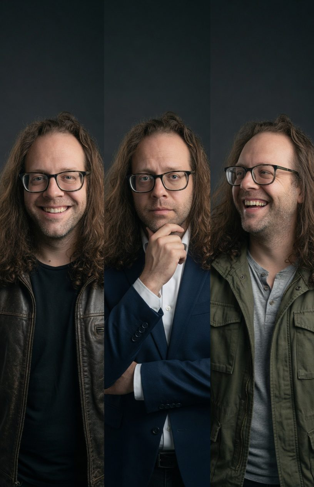
Three slightly different guys who all kind of looked like me.
I wrote a description of myself and put it in every prompt, word for word.
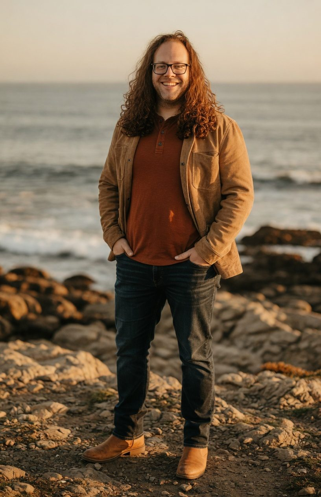
Formal, casual, outdoor, lifestyle. Run, look, critique, run again.
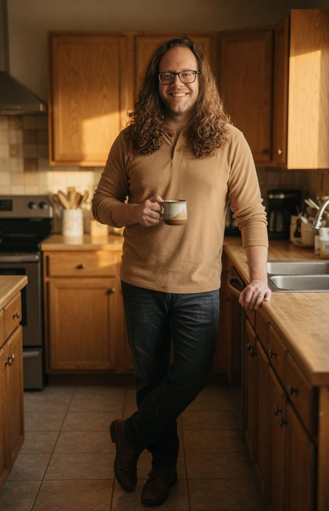
A kitchen in the morning. These ended up my favorites.
Each underlined chunk does one job. Tap one. The colors are only there to tell them apart.
I am a True Spring, so navy and charcoal fight my skin. The palette became a rule: camel, rust, olive, cream, cognac. Warm light only.
I am 6 foot 3 and about 235. Left alone it squashed me into a chair or gave me a gym body. The line that fixed it: "slightly heavyset but proportionate for frame."
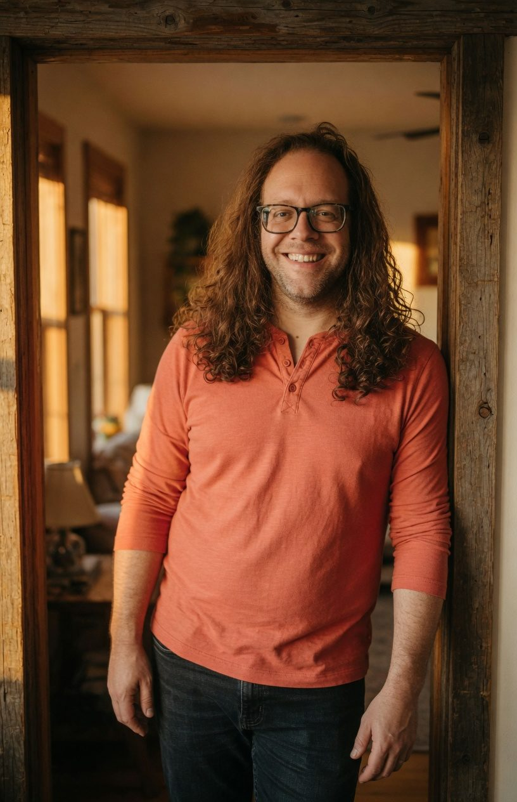
Tap any frame to see it big. Every person here is generated.
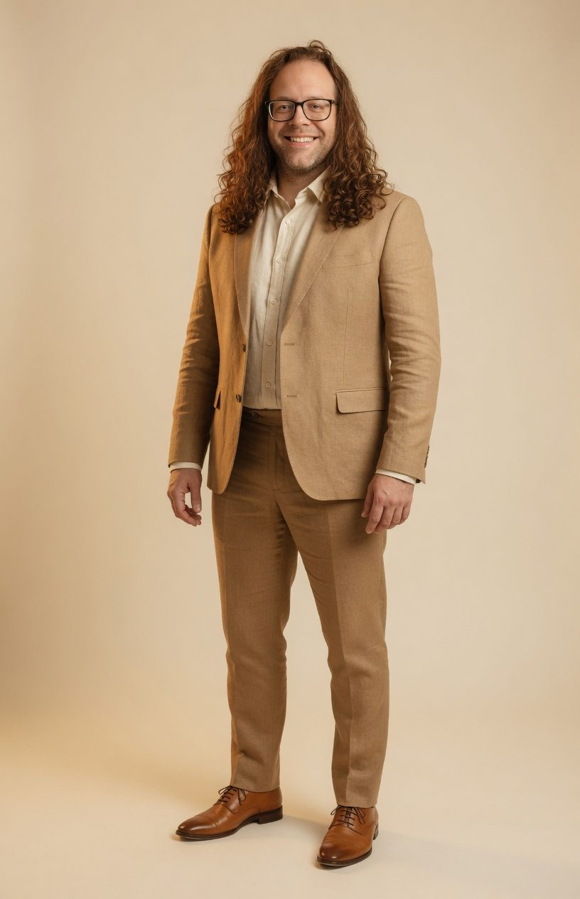
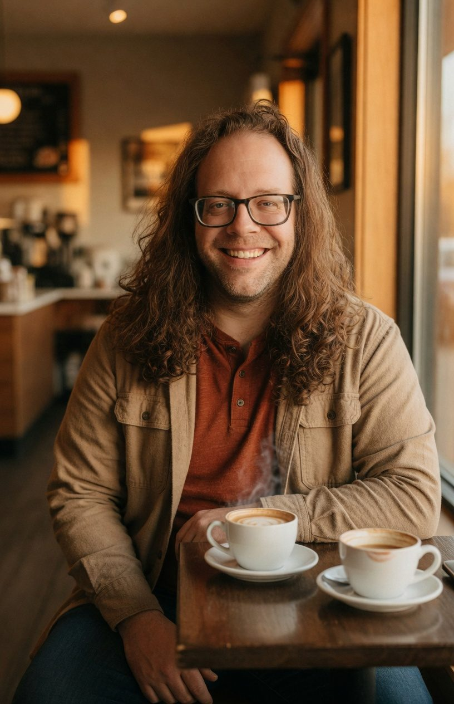
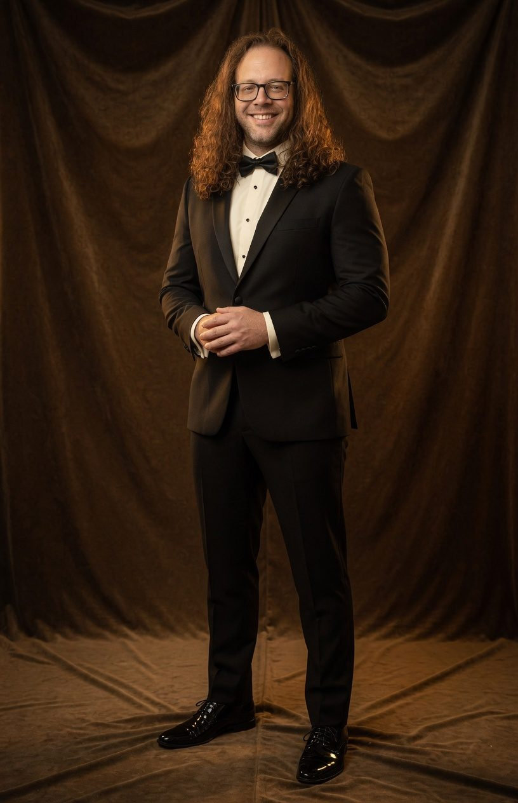
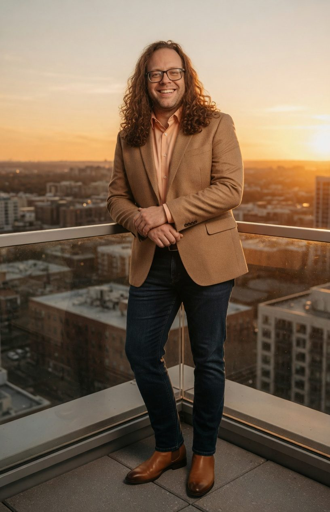
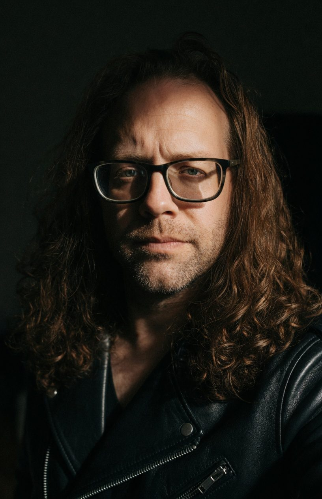
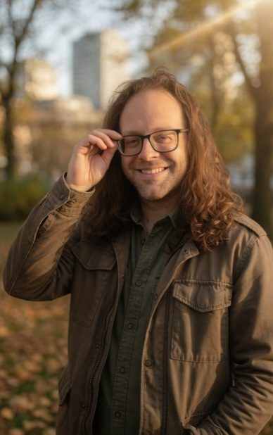
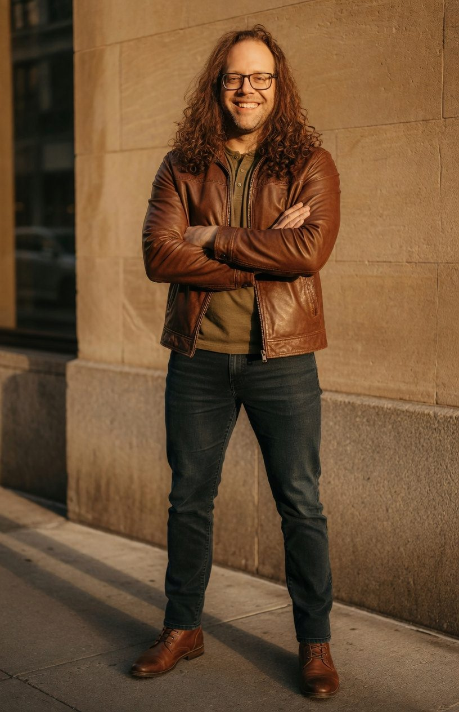
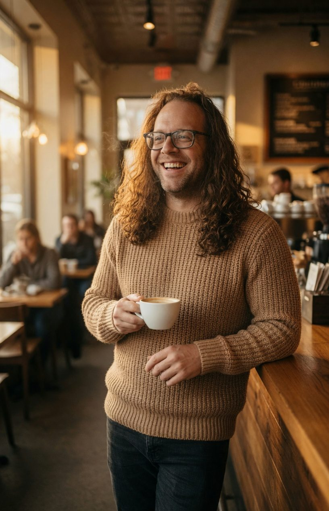
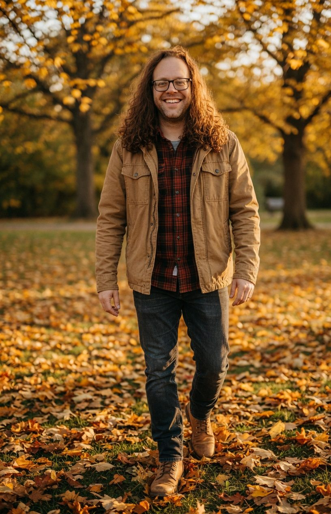
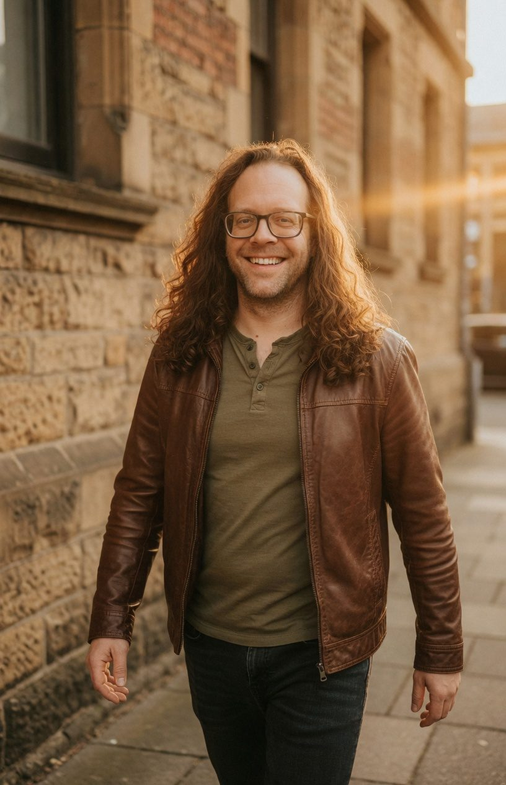
I am a photographer and video person by trade. What I walked away with is a way to art-direct AI imagery like a real shoot: light, palette, wardrobe, story, and a lot of retakes.
Get in touchEvery image here except the first is AI-generated from one photograph of me, with my consent, because it is me. Pictures made in Grok. Planning, prompts, and this page made with Claude. Anything I make for someone else is labeled as AI-generated and starts with their consent too.